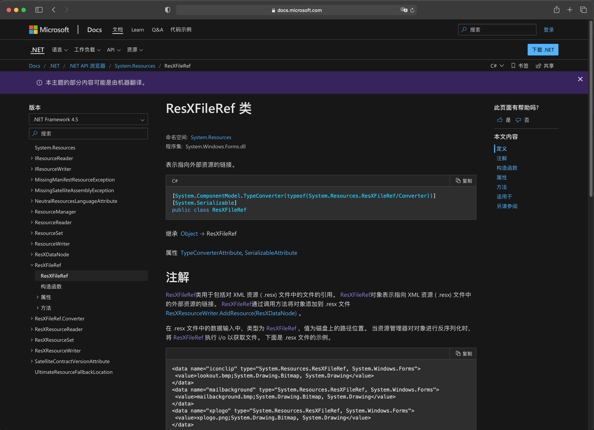

<!DOCTYPE html><html lang="en"><head><meta charset="UTF-8"><meta name="viewport" content="width=device-width,initial-scale=1,maximum-scale=2"><meta name="theme-color" content="#FFF"><link rel="apple-touch-icon" sizes="180x180" href="/images/apple-touch-icon.png"><link rel="icon" type="image/ico" sizes="32x32" href="/images/favicon.ico"><meta http-equiv="Cache-Control" content="no-transform"><meta http-equiv="Cache-Control" content="no-siteapp"><link rel="alternate" type="application/rss+xml" title="Sakupinera" href="http://sakupinera.github.io/rss.xml"><link rel="alternate" type="application/atom+xml" title="Sakupinera" href="http://sakupinera.github.io/atom.xml"><link rel="alternate" type="application/json" title="Sakupinera" href="http://sakupinera.github.io/feed.json"><link rel="stylesheet" href="//fonts.googleapis.com/css?family=Mulish:300,300italic,400,400italic,700,700italic%7CFredericka%20the%20Great:300,300italic,400,400italic,700,700italic%7CNoto%20Serif%20JP:300,300italic,400,400italic,700,700italic%7CNoto%20Serif%20SC:300,300italic,400,400italic,700,700italic%7CInconsolata:300,300italic,400,400italic,700,700italic&display=swap&subset=latin,latin-ext"><link rel="stylesheet" href="/css/app.css?v=0.2.5"><meta name="keywords" content="读书笔记,C#"><link rel="canonical" href="http://sakupinera.github.io/2022/09/27/csharp/clr-via-csharp/Chapter%204%20Type%20Fundamentals/"><title>CLR via C# - Chapter 4 Type Fundamentals - CLR-via-CSharp - CSharp | Hanamai Sora = Sakupinera</title><meta name="generator" content="Hexo 5.4.2"></head><body itemscope itemtype="http://schema.org/WebPage"><div id="loading"><div class="cat"><div class="body"></div><div class="head"><div class="face"></div></div><div class="foot"><div class="tummy-end"></div><div class="bottom"></div><div class="legs left"></div><div class="legs right"></div></div><div class="paw"><div class="hands left"></div><div class="hands right"></div></div></div></div><div id="container"><header id="header" itemscope itemtype="http://schema.org/WPHeader"><div class="inner"><div id="brand"><div class="pjax"><h1 itemprop="name headline">CLR via C# - Chapter 4 Type Fundamentals</h1><div class="meta"><span class="item" title="Created: 2022-09-27 00:00:00"><span class="icon"><i class="ic i-calendar"></i> </span><span class="text">Posted on</span> <time itemprop="dateCreated datePublished" datetime="2022-09-27T00:00:00+08:00">2022-09-27</time> </span><span class="item" title="Symbols count in article"><span class="icon"><i class="ic i-pen"></i> </span><span class="text">Symbols count in article</span> <span>27k</span> <span class="text">words</span> </span><span class="item" title="Reading time"><span class="icon"><i class="ic i-clock"></i> </span><span class="text">Reading time</span> <span>25 mins.</span></span></div></div></div><nav id="nav"><div class="inner"><div class="toggle"><div class="lines" aria-label="Toggle navigation bar"><span class="line"></span> <span class="line"></span> <span class="line"></span></div></div><ul class="menu"><li class="item title"><a href="/" rel="start">Hanamai Sora</a></li></ul><ul class="right"><li class="item theme"><i class="ic i-sun"></i></li><li class="item search"><i class="ic i-search"></i></li></ul></div></nav></div><div id="imgs" class="pjax"><ul><li class="item" data-background-image="https://tva1.sinaimg.cn/large/6833939bly1giciusoyjnj219g0u0x56.jpg"></li><li class="item" data-background-image="https://tva1.sinaimg.cn/large/6833939bly1gicitht3xtj20zk0m8k5v.jpg"></li><li class="item" data-background-image="https://tva1.sinaimg.cn/large/6833939bly1gicit31ffoj20zk0m8naf.jpg"></li><li class="item" data-background-image="https://tva1.sinaimg.cn/large/6833939bly1gicm0n457cj20zk0m8e81.jpg"></li><li class="item" data-background-image="https://tva1.sinaimg.cn/large/6833939bly1gicitcxhpij20zk0m8hdt.jpg"></li><li class="item" data-background-image="https://tva1.sinaimg.cn/large/6833939bly1giciuv0socj20zk0m8qes.jpg"></li></ul></div></header><div id="waves"><svg class="waves" xmlns="http://www.w3.org/2000/svg" xmlns:xlink="http://www.w3.org/1999/xlink" viewBox="0 24 150 28" preserveAspectRatio="none" shape-rendering="auto"><defs><path id="gentle-wave" d="M-160 44c30 0 58-18 88-18s 58 18 88 18 58-18 88-18 58 18 88 18 v44h-352z"/></defs><g class="parallax"><use xlink:href="#gentle-wave" x="48" y="0"/><use xlink:href="#gentle-wave" x="48" y="3"/><use xlink:href="#gentle-wave" x="48" y="5"/><use xlink:href="#gentle-wave" x="48" y="7"/></g></svg></div><main><div class="inner"><div id="main" class="pjax"><div class="article wrap"><div class="breadcrumb" itemscope itemtype="https://schema.org/BreadcrumbList"><i class="ic i-home"></i> <span><a href="/">Home</a></span><i class="ic i-angle-right"></i> <span itemprop="itemListElement" itemscope itemtype="https://schema.org/ListItem"><a href="/categories/CSharp/" itemprop="item" rel="index" title="In CSharp"><span itemprop="name">CSharp</span></a><meta itemprop="position" content="1"></span><i class="ic i-angle-right"></i> <span class="current" itemprop="itemListElement" itemscope itemtype="https://schema.org/ListItem"><a href="/categories/CSharp/CLR-via-CSharp/" itemprop="item" rel="index" title="In CLR-via-CSharp"><span itemprop="name">CLR-via-CSharp</span></a><meta itemprop="position" content="2"></span></div><article itemscope itemtype="http://schema.org/Article" class="post block" lang="en"><link itemprop="mainEntityOfPage" href="http://sakupinera.github.io/2022/09/27/csharp/clr-via-csharp/Chapter%204%20Type%20Fundamentals/"><span hidden itemprop="author" itemscope itemtype="http://schema.org/Person"><meta itemprop="image" content="/images/avatar.jpg"><meta itemprop="name" content="Sakupinera"><meta itemprop="description" content=", 保持你的决心！"></span><span hidden itemprop="publisher" itemscope itemtype="http://schema.org/Organization"><meta itemprop="name" content="Sakupinera"></span><div class="body md" itemprop="articleBody"><h1 id="chapter-4-type-fundamentals"><a class="anchor" href="#chapter-4-type-fundamentals">#</a> Chapter 4 Type Fundamentals</h1><h2 id="41-all-types-are-derived-from-systemobject"><a class="anchor" href="#41-all-types-are-derived-from-systemobject">#</a> 4.1 All Types Are Derived from System.Object</h2><blockquote><p>The runtime requires every type to ultimately be derived from the System.Object type. This means that the following two type definitions are identical.</p></blockquote><figure class="highlight csharp"><figcaption data-lang="C#"></figcaption><table><tr><td data-num="1"></td><td><pre><span class="token comment">// Implicitly derived from Object</span></pre></td></tr><tr><td data-num="2"></td><td><pre><span class="token keyword">class</span> <span class="token class-name">Employee</span> <span class="token punctuation">&#123;</span> </pre></td></tr><tr><td data-num="3"></td><td><pre>	<span class="token range operator">..</span><span class="token punctuation">.</span></pre></td></tr><tr><td data-num="4"></td><td><pre><span class="token punctuation">&#125;</span></pre></td></tr><tr><td data-num="5"></td><td><pre><span class="token comment">// Explicitly derived from Object</span></pre></td></tr><tr><td data-num="6"></td><td><pre><span class="token keyword">class</span> <span class="token class-name">Employee</span> <span class="token punctuation">:</span> <span class="token type-list"><span class="token class-name">System<span class="token punctuation">.</span>Object</span></span> <span class="token punctuation">&#123;</span></pre></td></tr><tr><td data-num="7"></td><td><pre>	<span class="token range operator">..</span><span class="token punctuation">.</span></pre></td></tr><tr><td data-num="8"></td><td><pre><span class="token punctuation">&#125;</span></pre></td></tr></table></figure><blockquote><p>Because all types are ultimately derived from System.Object, you are guaranteed that every object of every type has a minimum set of methods. Specifically, the System.Object class offers the public instance methods listed in Table 4-1.</p></blockquote><p></p><blockquote><p>In addition, types that derive from System.Object have access to the protected methods listed in Table 4-2.</p></blockquote><p></p><blockquote><p>The CLR requires all objects to be created using the new operator. The following line shows how to create an Employee object.</p></blockquote><figure class="highlight csharp"><figcaption data-lang="C#"></figcaption><table><tr><td data-num="1"></td><td><pre><span class="token class-name">Employee</span> e <span class="token operator">=</span> <span class="token keyword">new</span> <span class="token constructor-invocation class-name">Employee</span><span class="token punctuation">(</span><span class="token string">"ConstructorParam1"</span><span class="token punctuation">)</span><span class="token punctuation">;</span></pre></td></tr></table></figure><blockquote><p>Here’s what the new operator does:</p><ol><li>It calculates the number of bytes required by all instance fields defined in the type and all of its base types up to and including System.Object (which defines no instance fields of its own). Every object on the heap requires some additional members—called the type object pointer and the sync block index—used by the CLR to manage the object. The bytes for these additional members are added to the size of the object.</li><li>It allocates memory for the object by allocating the number of bytes required for the specified type from the managed heap; all of these bytes are then set to zero (0).</li><li>It initializes the object’s type object pointer and sync block index members.</li><li>The type’s instance constructor is called, passing it any arguments (the string &quot;ConstructorParam1&quot; in the preceding example) specified in the call to new. Most compilers automatically emit code in a constructor to call a base class’s constructor. Each constructor is responsible for initializing the instance fields defined by the type whose constructor is being called. Eventually, System.Object’s constructor is called, and this constructor method does nothing but return.</li></ol></blockquote><blockquote><p>After new has performed all of these operations, it returns a reference (or pointer) to the newly created object. In the preceding code example, this reference is saved in the variable e, which is of type Employee.</p></blockquote><blockquote><p>By the way, the new operator has no complementary delete operator; that is, there is no way to explicitly free the memory allocated for an object. The CLR uses a garbage-collected environment (described in Chapter 21) that automatically detects when objects are no longer being used or accessed and frees the object’s memory automatically.</p></blockquote><p>💡 小结：“运行时” 要求每个类型最终都从 System.Object 类型派生。当用 new 操作符创建一个对象的实例时，会做以下几件事：1. 计算类型机器所有基类型中定义的所有实例字段需要的字节数。堆上每个对象都需要一些额外的成员，包括 “类型对象指针”（type object pointer）和 “同步块索引”（sync block index）。CLR 利用这些成员管理对象。额外成员的字节数要计入对象大小。2. 从托管堆中分配类型要求的字节数，从而分配对象的内存，分配的所有字节都设为 0。3. 初始化对象的 “类型对象指针” 和 “同步块索引” 成员。4. 调用类型的实例构造器，传递在 new 调用中指定的实参。大多数编译器都在构造器中自动生成代码来调用基类构造器。每个类型的构造器都负责初始化该类型定义的实例字段。最终调用 System.Object 的构造器，该构造器什么都不做，简单地返回。C# 中没有与 new 操作符对应的 delete 操作符，是因为 CLR 采用了垃圾回收机制，能自动检测到一个对象不再被使用或访问，并自动释放对象的内存。</p><h2 id="42-casting-between-types"><a class="anchor" href="#42-casting-between-types">#</a> 4.2 Casting Between Types</h2><blockquote><p>One of the most important features of the CLR is type safety. At run time, the CLR always knows what type an object is. You can always discover an object’s exact type by calling the GetType method. Because this method is nonvirtual, it is impossible for a type to spoof another type. For example, the Employee type can’t override the GetType method and have it return a type of SuperHero.</p></blockquote><blockquote><p>Developers frequently find it necessary to cast an object to various types. The CLR allows you to cast an object to its type or to any of its base types. Your choice of programming language dictates how to expose casting operations to the developer. For example, C# doesn’t require any special syntax to cast an object to any of its base types, because casts to base types are considered safe implicit conversions. However, C# does require the developer to explicitly cast an object to any of its derived types because such a cast could fail at run time. The following code demonstrates casting to base and derived types.</p></blockquote><figure class="highlight csharp"><figcaption data-lang="C#"></figcaption><table><tr><td data-num="1"></td><td><pre><span class="token comment">// This type is implicitly derived from System.Object. </span></pre></td></tr><tr><td data-num="2"></td><td><pre><span class="token keyword">internal</span> <span class="token keyword">class</span> <span class="token class-name">Employee</span> <span class="token punctuation">&#123;</span> </pre></td></tr><tr><td data-num="3"></td><td><pre> <span class="token range operator">..</span><span class="token punctuation">.</span> </pre></td></tr><tr><td data-num="4"></td><td><pre><span class="token punctuation">&#125;</span> </pre></td></tr><tr><td data-num="5"></td><td><pre><span class="token keyword">public</span> <span class="token keyword">sealed</span> <span class="token keyword">class</span> <span class="token class-name">Program</span> <span class="token punctuation">&#123;</span> </pre></td></tr><tr><td data-num="6"></td><td><pre> <span class="token keyword">public</span> <span class="token keyword">static</span> <span class="token return-type class-name"><span class="token keyword">void</span></span> <span class="token function">Main</span><span class="token punctuation">(</span><span class="token punctuation">)</span> <span class="token punctuation">&#123;</span> </pre></td></tr><tr><td data-num="7"></td><td><pre> <span class="token comment">// No cast needed since new returns an Employee object </span></pre></td></tr><tr><td data-num="8"></td><td><pre> <span class="token comment">// and Object is a base type of Employee. </span></pre></td></tr><tr><td data-num="9"></td><td><pre> <span class="token class-name">Object</span> o <span class="token operator">=</span> <span class="token keyword">new</span> <span class="token constructor-invocation class-name">Employee</span><span class="token punctuation">(</span><span class="token punctuation">)</span><span class="token punctuation">;</span></pre></td></tr><tr><td data-num="10"></td><td><pre> <span class="token comment">// Cast required since Employee is derived from Object. </span></pre></td></tr><tr><td data-num="11"></td><td><pre> <span class="token comment">// Other languages (such as Visual Basic) might not require </span></pre></td></tr><tr><td data-num="12"></td><td><pre> <span class="token comment">// this cast to compile. </span></pre></td></tr><tr><td data-num="13"></td><td><pre> <span class="token class-name">Employee</span> e <span class="token operator">=</span> <span class="token punctuation">(</span>Employee<span class="token punctuation">)</span> o<span class="token punctuation">;</span> </pre></td></tr><tr><td data-num="14"></td><td><pre> <span class="token punctuation">&#125;</span> </pre></td></tr><tr><td data-num="15"></td><td><pre><span class="token punctuation">&#125;</span></pre></td></tr></table></figure><blockquote><p>This example shows what is necessary for your compiler to compile your code. Now I’ll explain what happens at run time. At run time, the CLR checks casting operations to ensure that casts are always to the object’s actual type or any of its base types. For example, the following code will compile, but at run time, an InvalidCastException will be thrown.</p></blockquote><figure class="highlight csharp"><figcaption data-lang="C#"></figcaption><table><tr><td data-num="1"></td><td><pre><span class="token keyword">internal</span> <span class="token keyword">class</span> <span class="token class-name">Employee</span> <span class="token punctuation">&#123;</span> </pre></td></tr><tr><td data-num="2"></td><td><pre> <span class="token range operator">..</span><span class="token punctuation">.</span> </pre></td></tr><tr><td data-num="3"></td><td><pre><span class="token punctuation">&#125;</span> </pre></td></tr><tr><td data-num="4"></td><td><pre><span class="token keyword">internal</span> <span class="token keyword">class</span> <span class="token class-name">Manager</span> <span class="token punctuation">:</span> <span class="token type-list"><span class="token class-name">Employee</span></span> <span class="token punctuation">&#123;</span> </pre></td></tr><tr><td data-num="5"></td><td><pre> <span class="token range operator">..</span><span class="token punctuation">.</span> </pre></td></tr><tr><td data-num="6"></td><td><pre><span class="token punctuation">&#125;</span> </pre></td></tr><tr><td data-num="7"></td><td><pre><span class="token keyword">public</span> <span class="token keyword">sealed</span> <span class="token keyword">class</span> <span class="token class-name">Program</span> <span class="token punctuation">&#123;</span> </pre></td></tr><tr><td data-num="8"></td><td><pre> <span class="token keyword">public</span> <span class="token keyword">static</span> <span class="token return-type class-name"><span class="token keyword">void</span></span> <span class="token function">Main</span><span class="token punctuation">(</span><span class="token punctuation">)</span> <span class="token punctuation">&#123;</span> </pre></td></tr><tr><td data-num="9"></td><td><pre> <span class="token comment">// Construct a Manager object and pass it to PromoteEmployee. </span></pre></td></tr><tr><td data-num="10"></td><td><pre> <span class="token comment">// A Manager IS-A Object: PromoteEmployee runs OK. </span></pre></td></tr><tr><td data-num="11"></td><td><pre> <span class="token class-name">Manager</span> m <span class="token operator">=</span> <span class="token keyword">new</span> <span class="token constructor-invocation class-name">Manager</span><span class="token punctuation">(</span><span class="token punctuation">)</span><span class="token punctuation">;</span> </pre></td></tr><tr><td data-num="12"></td><td><pre> <span class="token function">PromoteEmployee</span><span class="token punctuation">(</span>m<span class="token punctuation">)</span><span class="token punctuation">;</span> </pre></td></tr><tr><td data-num="13"></td><td><pre> <span class="token comment">// Construct a DateTime object and pass it to PromoteEmployee. </span></pre></td></tr><tr><td data-num="14"></td><td><pre> <span class="token comment">// A DateTime is NOT derived from Employee. PromoteEmployee </span></pre></td></tr><tr><td data-num="15"></td><td><pre> <span class="token comment">// throws a System.InvalidCastException exception. </span></pre></td></tr><tr><td data-num="16"></td><td><pre> <span class="token class-name">DateTime</span> newYears <span class="token operator">=</span> <span class="token keyword">new</span> <span class="token constructor-invocation class-name">DateTime</span><span class="token punctuation">(</span><span class="token number">2013</span><span class="token punctuation">,</span> <span class="token number">1</span><span class="token punctuation">,</span> <span class="token number">1</span><span class="token punctuation">)</span><span class="token punctuation">;</span> </pre></td></tr><tr><td data-num="17"></td><td><pre> <span class="token function">PromoteEmployee</span><span class="token punctuation">(</span>newYears<span class="token punctuation">)</span><span class="token punctuation">;</span> </pre></td></tr><tr><td data-num="18"></td><td><pre> <span class="token punctuation">&#125;</span> </pre></td></tr><tr><td data-num="19"></td><td><pre> <span class="token keyword">public</span> <span class="token keyword">static</span> <span class="token return-type class-name"><span class="token keyword">void</span></span> <span class="token function">PromoteEmployee</span><span class="token punctuation">(</span><span class="token class-name">Object</span> o<span class="token punctuation">)</span> <span class="token punctuation">&#123;</span> </pre></td></tr><tr><td data-num="20"></td><td><pre> <span class="token comment">// At this point, the compiler doesn't know exactly what </span></pre></td></tr><tr><td data-num="21"></td><td><pre> <span class="token comment">// type of object o refers to. So the compiler allows the </span></pre></td></tr><tr><td data-num="22"></td><td><pre> <span class="token comment">// code to compile. However, at run time, the CLR does know </span></pre></td></tr><tr><td data-num="23"></td><td><pre> <span class="token comment">// what type o refers to (each time the cast is performed) and </span></pre></td></tr><tr><td data-num="24"></td><td><pre> <span class="token comment">// it checks whether the object's type is Employee or any type </span></pre></td></tr><tr><td data-num="25"></td><td><pre> <span class="token comment">// that is derived from Employee. </span></pre></td></tr><tr><td data-num="26"></td><td><pre> <span class="token class-name">Employee</span> e <span class="token operator">=</span> <span class="token punctuation">(</span>Employee<span class="token punctuation">)</span> o<span class="token punctuation">;</span> </pre></td></tr><tr><td data-num="27"></td><td><pre> <span class="token range operator">..</span><span class="token punctuation">.</span></pre></td></tr><tr><td data-num="28"></td><td><pre> <span class="token punctuation">&#125;</span> </pre></td></tr><tr><td data-num="29"></td><td><pre><span class="token punctuation">&#125;</span></pre></td></tr></table></figure><p><strong>Casting with the C# is and as Operators</strong></p><blockquote><p>Another way to cast in the C# language is to use the is operator. The is operator checks whether an object is compatible with a given type, and the result of the evaluation is a Boolean: true or false. The is operator will never throw an exception. The following code demonstrates.</p></blockquote><figure class="highlight csharp"><figcaption data-lang="C#"></figcaption><table><tr><td data-num="1"></td><td><pre><span class="token class-name">Object</span> o <span class="token operator">=</span> <span class="token keyword">new</span> <span class="token constructor-invocation class-name">Object</span><span class="token punctuation">(</span><span class="token punctuation">)</span><span class="token punctuation">;</span> </pre></td></tr><tr><td data-num="2"></td><td><pre><span class="token class-name">Boolean</span> b1 <span class="token operator">=</span> <span class="token punctuation">(</span>o <span class="token keyword">is</span> <span class="token class-name">Object</span><span class="token punctuation">)</span><span class="token punctuation">;</span> <span class="token comment">// b1 is true. </span></pre></td></tr><tr><td data-num="3"></td><td><pre><span class="token class-name">Boolean</span> b2 <span class="token operator">=</span> <span class="token punctuation">(</span>o <span class="token keyword">is</span> <span class="token class-name">Employee</span><span class="token punctuation">)</span><span class="token punctuation">;</span> <span class="token comment">// b2 is false.</span></pre></td></tr></table></figure><blockquote><p>If the object reference is null, the is operator always returns false because there is no object available to check its type.</p></blockquote><blockquote><p>The is operator is typically used as follows.</p></blockquote><figure class="highlight csharp"><figcaption data-lang="C#"></figcaption><table><tr><td data-num="1"></td><td><pre><span class="token keyword">if</span> <span class="token punctuation">(</span>o <span class="token keyword">is</span> <span class="token class-name">Employee</span><span class="token punctuation">)</span> <span class="token punctuation">&#123;</span> </pre></td></tr><tr><td data-num="2"></td><td><pre> <span class="token class-name">Employee</span> e <span class="token operator">=</span> <span class="token punctuation">(</span>Employee<span class="token punctuation">)</span> o<span class="token punctuation">;</span> </pre></td></tr><tr><td data-num="3"></td><td><pre> <span class="token comment">// Use e within the remainder of the 'if' statement. </span></pre></td></tr><tr><td data-num="4"></td><td><pre><span class="token punctuation">&#125;</span></pre></td></tr></table></figure><blockquote><p>n this code, the CLR is actually checking the object’s type twice: The is operator first checks to see if o is compatible with the Employee type. If it is, inside the if statement, the CLR again verifies that o refers to an Employee when performing the cast. The CLR’s type checking improves security, but it certainly comes at a performance cost, because the CLR must determine the actual type of the object referred to by the variable (o), and then the CLR must walk the inheritance hierarchy, checking each base type against the specified type (Employee). Because this programming paradigm is quite common, C# offers a way to simplify this code and improve its performance by providing an as operator.</p></blockquote><figure class="highlight csharp"><figcaption data-lang="C#"></figcaption><table><tr><td data-num="1"></td><td><pre><span class="token class-name">Employee</span> e <span class="token operator">=</span> o <span class="token keyword">as</span> <span class="token class-name">Employee</span><span class="token punctuation">;</span> </pre></td></tr><tr><td data-num="2"></td><td><pre><span class="token keyword">if</span> <span class="token punctuation">(</span>e <span class="token operator">!=</span> <span class="token keyword">null</span><span class="token punctuation">)</span> <span class="token punctuation">&#123;</span> </pre></td></tr><tr><td data-num="3"></td><td><pre> <span class="token comment">// Use e within the 'if' statement. </span></pre></td></tr><tr><td data-num="4"></td><td><pre><span class="token punctuation">&#125;</span></pre></td></tr></table></figure><blockquote><p>In this code, the CLR checks if o is compatible with the Employee type, and if it is, as returns a non-null reference to the same object. If o is not compatible with the Employee type, the as operator returns null. Notice that the as operator causes the CLR to verify an object’s type just once. The if statement simply checks whether e is null; this check can be performed faster than verifying an object’s type.</p></blockquote><blockquote><p>The as operator works just as casting does except that the as operator will never throw an exception. Instead, if the object can’t be cast, the result is null. You’ll want to check to see whether the resulting reference is null, or attempting to use the resulting reference will cause a System.NullReferenceException to be thrown. The following code demonstrates.</p></blockquote><figure class="highlight csharp"><figcaption data-lang="C#"></figcaption><table><tr><td data-num="1"></td><td><pre><span class="token class-name">Object</span> o <span class="token operator">=</span> <span class="token keyword">new</span> <span class="token constructor-invocation class-name">Object</span><span class="token punctuation">(</span><span class="token punctuation">)</span><span class="token punctuation">;</span> <span class="token comment">// Creates a new Object object</span></pre></td></tr><tr><td data-num="2"></td><td><pre><span class="token class-name">Employee</span> e <span class="token operator">=</span> o <span class="token keyword">as</span> <span class="token class-name">Employee</span><span class="token punctuation">;</span> <span class="token comment">// Casts o to an Employee </span></pre></td></tr><tr><td data-num="3"></td><td><pre><span class="token comment">// The cast above fails: no exception is thrown, but e is set to null. </span></pre></td></tr><tr><td data-num="4"></td><td><pre>e<span class="token punctuation">.</span><span class="token function">ToString</span><span class="token punctuation">(</span><span class="token punctuation">)</span><span class="token punctuation">;</span> <span class="token comment">// Accessing e throws a NullReferenceException.</span></pre></td></tr></table></figure><blockquote><p>To make sure you understand everything just presented, take the following quiz. Assume that these two class definitions exist.</p></blockquote><figure class="highlight csharp"><figcaption data-lang="C#"></figcaption><table><tr><td data-num="1"></td><td><pre><span class="token keyword">internal</span> <span class="token keyword">class</span> <span class="token class-name">B</span> <span class="token punctuation">&#123;</span> <span class="token comment">// Base class </span></pre></td></tr><tr><td data-num="2"></td><td><pre><span class="token punctuation">&#125;</span> </pre></td></tr><tr><td data-num="3"></td><td><pre><span class="token keyword">internal</span> <span class="token keyword">class</span> <span class="token class-name">D</span> <span class="token punctuation">:</span> <span class="token type-list"><span class="token class-name">B</span></span> <span class="token punctuation">&#123;</span> <span class="token comment">// Derived class </span></pre></td></tr><tr><td data-num="4"></td><td><pre><span class="token punctuation">&#125;</span></pre></td></tr></table></figure><blockquote><p>Now examine the lines of C# code in Table 4-3. For each line, decide whether the line would compile and execute successfully (marked OK in Table 4-3), cause a compile-time error (CTE), or cause a run-time error (RTE).</p></blockquote><p></p><blockquote><p>注意 C# 允许类型定义转换操作符方法，详细参见 8.5 节 “转换操作符方法”。只有在使用转型表达式时才调用这些方法；使用 C# <code>as</code> 或 <code>is</code> 操作符时永远不调用它们。</p></blockquote><p>💡小结：CLR 最重要的特性之一就是类型安全。在运行时，CLR 总是知道对象的类型是什么。调用 GetType 可以知道对象的具体类型，这是一个非虚方法，所以一个类型不可能伪装成另一个类型。C# 不要求任何特殊语法即可将对象转换为它的任何基类型，因为向基类型的转换被认为是一种安全的隐式转换。然而在将对象转换为它的某个派生对象时，C# 要求进行显式转换，因为这种转换可能在运行时失败。可以使用 C# 的 is 和 as 操作符来转型。is 检查对象是否兼容于指定类型，返回 Boolean 值 true 或 false，并且永远不会抛出异常。as 操作符的工作方式和强制类型转换一样，同样也不会抛出异常，而过对象不能转型，结果就是 null，其他情况正常转型。具体类型安全性检测结果可参考上表。</p><h2 id="43-namespaces-and-assemblies"><a class="anchor" href="#43-namespaces-and-assemblies">#</a> 4.3 Namespaces and Assemblies</h2><blockquote><p>Namespaces allow for the logical grouping of related types, and developers typically use them to make it easier to locate a particular type. For example, the System.Text namespace defines a bunch of types for performing string manipulations, and the <span class="exturl" data-url="aHR0cDovL1N5c3RlbS5JTw==">System.IO</span> namespace defines a bunch of types for performing I/O operations. Here’s some code that constructs a System.IO.FileStream object and a System.Text.StringBuilder object.</p></blockquote><figure class="highlight csharp"><figcaption data-lang="C#"></figcaption><table><tr><td data-num="1"></td><td><pre><span class="token keyword">public</span> <span class="token keyword">sealed</span> <span class="token keyword">class</span> <span class="token class-name">Program</span> <span class="token punctuation">&#123;</span> </pre></td></tr><tr><td data-num="2"></td><td><pre> <span class="token keyword">public</span> <span class="token keyword">static</span> <span class="token return-type class-name"><span class="token keyword">void</span></span> <span class="token function">Main</span><span class="token punctuation">(</span><span class="token punctuation">)</span> <span class="token punctuation">&#123;</span> </pre></td></tr><tr><td data-num="3"></td><td><pre> <span class="token class-name">System<span class="token punctuation">.</span>IO<span class="token punctuation">.</span>FileStream</span> fs <span class="token operator">=</span> <span class="token keyword">new</span> <span class="token constructor-invocation class-name">System<span class="token punctuation">.</span>IO<span class="token punctuation">.</span>FileStream</span><span class="token punctuation">(</span><span class="token range operator">..</span><span class="token punctuation">.</span><span class="token punctuation">)</span><span class="token punctuation">;</span> </pre></td></tr><tr><td data-num="4"></td><td><pre> <span class="token class-name">System<span class="token punctuation">.</span>Text<span class="token punctuation">.</span>StringBuilder</span> sb <span class="token operator">=</span> <span class="token keyword">new</span> <span class="token constructor-invocation class-name">System<span class="token punctuation">.</span>Text<span class="token punctuation">.</span>StringBuilder</span><span class="token punctuation">(</span><span class="token punctuation">)</span><span class="token punctuation">;</span> </pre></td></tr><tr><td data-num="5"></td><td><pre> <span class="token punctuation">&#125;</span> </pre></td></tr><tr><td data-num="6"></td><td><pre><span class="token punctuation">&#125;</span></pre></td></tr></table></figure><blockquote><p>As you can see, the code is pretty verbose; it would be nice if there were some shorthand way to refer to the FileStream and StringBuilder types to reduce typing. Fortunately, many compilers do offer mechanisms to reduce programmer typing. The C# compiler provides this mechanism via the using directive. The following code is identical to the previous example.</p></blockquote><figure class="highlight csharp"><figcaption data-lang="C#"></figcaption><table><tr><td data-num="1"></td><td><pre><span class="token keyword">using</span> <span class="token namespace">System<span class="token punctuation">.</span>IO</span><span class="token punctuation">;</span> <span class="token comment">// Try prepending "System.IO." </span></pre></td></tr><tr><td data-num="2"></td><td><pre><span class="token keyword">using</span> <span class="token namespace">System<span class="token punctuation">.</span>Text</span><span class="token punctuation">;</span> <span class="token comment">// Try prepending "System.Text." </span></pre></td></tr><tr><td data-num="3"></td><td><pre><span class="token keyword">public</span> <span class="token keyword">sealed</span> <span class="token keyword">class</span> <span class="token class-name">Program</span> <span class="token punctuation">&#123;</span> </pre></td></tr><tr><td data-num="4"></td><td><pre> <span class="token keyword">public</span> <span class="token keyword">static</span> <span class="token return-type class-name"><span class="token keyword">void</span></span> <span class="token function">Main</span><span class="token punctuation">(</span><span class="token punctuation">)</span> <span class="token punctuation">&#123;</span> </pre></td></tr><tr><td data-num="5"></td><td><pre> <span class="token class-name">FileStream</span> fs <span class="token operator">=</span> <span class="token keyword">new</span> <span class="token constructor-invocation class-name">FileStream</span><span class="token punctuation">(</span><span class="token range operator">..</span><span class="token punctuation">.</span><span class="token punctuation">)</span><span class="token punctuation">;</span> </pre></td></tr><tr><td data-num="6"></td><td><pre> <span class="token class-name">StringBuilder</span> sb <span class="token operator">=</span> <span class="token keyword">new</span> <span class="token constructor-invocation class-name">StringBuilder</span><span class="token punctuation">(</span><span class="token punctuation">)</span><span class="token punctuation">;</span> </pre></td></tr><tr><td data-num="7"></td><td><pre> <span class="token punctuation">&#125;</span> </pre></td></tr><tr><td data-num="8"></td><td><pre><span class="token punctuation">&#125;</span></pre></td></tr></table></figure><p>💡重要提示：CLR 对 “命名空间” 一无所知。访问类型时， CLR 需要知道类型的完整名称 (可能是相当长的、包含句点符号的名称) 以及该类型的定义具体在哪个程序集中。这样 “运行时” 才能加载正确程序集，找到目标类型，并对其进行操作。</p><blockquote><p>In the previous code example, the compiler needs to ensure that every type referenced exists and that my code is using that type in the correct way: calling methods that exist, passing the right number of arguments to these methods, ensuring that the arguments are the right type, using the method’s return value correctly, and so on. If the compiler can’t find a type with the specified name in the source files or in any referenced assemblies, it prepends <span class="exturl" data-url="aHR0cDovL1N5c3RlbS5JTw==">System.IO</span>. to the type name and checks if the generated name matches an existing type. If the compiler still can’t find a match, it prepends System.Text. to the type’s name. The two using directives shown earlier allow me to simply type FileStream and StringBuilder in my code—the compiler automatically expands the references to System.IO.FileStream and System.Text.StringBuilder. I’m sure you can easily imagine how much typing this saves, as well as how much cleaner your code is to read.</p></blockquote><blockquote><p>When checking for a type’s definition, the compiler must be told which assemblies to examine by using the /reference compiler switch as discussed in Chapter 2, “Building, Packaging, Deploying, and Administering Applications and Types,” and Chapter 3, “Shared Assemblies and Strongly Named Assemblies.” The compiler will scan all of the referenced assemblies looking for the type’s definition. After the compiler finds the proper assembly, the assembly information and the type information is emitted into the resulting managed module’s metadata. To get the assembly information, you must pass the assembly that defines any referenced types to the compiler. The C# compiler, by default, automatically looks in the MSCorLib.dll assembly even if you don’t explicitly tell it to. The MSCorLib.dll assembly contains the definitions of all of the core Framework Class Library (FCL) types, such as Object, Int32, String, and so on.</p></blockquote><blockquote><p>As you might imagine, there are some potential problems with the way that compilers treat namespaces: it’s possible to have two (or more) types with the same name in different namespaces. Microsoft strongly recommends that you define unique names for types. However, in some cases, it’s simply not possible. The runtime encourages the reuse of components. Your application might take advantage of a component that Microsoft created and another component that Wintellect created. These two companies might both offer a type called Widget—Microsoft’s Widget does one thing, and Wintellect’s Widget does something entirely different. In this scenario, you had no control over the naming of the types, so you can differentiate between the two widgets by using their fully qualified names when referencing them. To reference Microsoft’s Widget, you would use Microsoft.Widget, and to reference Wintellect’s Widget, you would use Wintellect.Widget. In the following code, the reference to Widget is ambiguous, so the C# compiler generates the following message: error CS0104: 'Widget' is an ambiguous reference between 'Microsoft.Widget' and 'Wintellect.Widget'.</p></blockquote><figure class="highlight csharp"><figcaption data-lang="C#"></figcaption><table><tr><td data-num="1"></td><td><pre><span class="token keyword">using</span> <span class="token namespace">Microsoft</span><span class="token punctuation">;</span> <span class="token comment">// Try prepending "Microsoft." </span></pre></td></tr><tr><td data-num="2"></td><td><pre><span class="token keyword">using</span> <span class="token namespace">Wintellect</span><span class="token punctuation">;</span> <span class="token comment">// Try prepending "Wintellect." </span></pre></td></tr><tr><td data-num="3"></td><td><pre><span class="token keyword">public</span> <span class="token keyword">sealed</span> <span class="token keyword">class</span> <span class="token class-name">Program</span> <span class="token punctuation">&#123;</span> </pre></td></tr><tr><td data-num="4"></td><td><pre> <span class="token keyword">public</span> <span class="token keyword">static</span> <span class="token return-type class-name"><span class="token keyword">void</span></span> <span class="token function">Main</span><span class="token punctuation">(</span><span class="token punctuation">)</span> <span class="token punctuation">&#123;</span> </pre></td></tr><tr><td data-num="5"></td><td><pre> <span class="token class-name">Widget</span> w <span class="token operator">=</span> <span class="token keyword">new</span> <span class="token constructor-invocation class-name">Widget</span><span class="token punctuation">(</span><span class="token punctuation">)</span><span class="token punctuation">;</span><span class="token comment">// An ambiguous reference </span></pre></td></tr><tr><td data-num="6"></td><td><pre> <span class="token punctuation">&#125;</span> </pre></td></tr><tr><td data-num="7"></td><td><pre><span class="token punctuation">&#125;</span></pre></td></tr></table></figure><blockquote><p>To remove the ambiguity, you must explicitly tell the compiler which Widget you want to create.</p></blockquote><figure class="highlight csharp"><figcaption data-lang="C#"></figcaption><table><tr><td data-num="1"></td><td><pre><span class="token keyword">using</span> <span class="token namespace">Microsoft</span><span class="token punctuation">;</span> <span class="token comment">// Try prepending "Microsoft." </span></pre></td></tr><tr><td data-num="2"></td><td><pre><span class="token keyword">using</span> <span class="token namespace">Wintellect</span><span class="token punctuation">;</span> <span class="token comment">// Try prepending "Wintellect." </span></pre></td></tr><tr><td data-num="3"></td><td><pre><span class="token keyword">public</span> <span class="token keyword">sealed</span> <span class="token keyword">class</span> <span class="token class-name">Program</span> <span class="token punctuation">&#123;</span> </pre></td></tr><tr><td data-num="4"></td><td><pre> <span class="token keyword">public</span> <span class="token keyword">static</span> <span class="token return-type class-name"><span class="token keyword">void</span></span> <span class="token function">Main</span><span class="token punctuation">(</span><span class="token punctuation">)</span> <span class="token punctuation">&#123;</span> </pre></td></tr><tr><td data-num="5"></td><td><pre> <span class="token class-name">Wintellect<span class="token punctuation">.</span>Widget</span> w <span class="token operator">=</span> <span class="token keyword">new</span> <span class="token constructor-invocation class-name">Wintellect<span class="token punctuation">.</span>Widget</span><span class="token punctuation">(</span><span class="token punctuation">)</span><span class="token punctuation">;</span> <span class="token comment">// Not ambiguous </span></pre></td></tr><tr><td data-num="6"></td><td><pre> <span class="token punctuation">&#125;</span> </pre></td></tr><tr><td data-num="7"></td><td><pre><span class="token punctuation">&#125;</span></pre></td></tr></table></figure><blockquote><p>These methods of disambiguating a type are useful, but in some scenarios, you need to go further. Imagine that the Australian Boomerang Company (ABC) and the Alaskan Boat Corporation (ABC) are each creating a type, called BuyProduct, which they intend to ship in their respective assemblies. It’s likely that both companies would create a namespace called ABC that contains a type called BuyProduct. Anyone who tries to develop an application that needs to buy both boomerangs and boats would be in for some trouble unless the programming language provides a way to programmatically distinguish between the assemblies, not just between the namespaces. Fortunately, the C# compiler offers a feature called extern aliases that gives you a way to work around this rarely occurring problem. Extern aliases also give you a way to access a single type from two (or more) different versions of the same assembly. For more information about extern aliases, see the C# Language Specification.</p></blockquote><blockquote><p>In your library, when you’re designing types that you expect third parties to use, you should define these types in a namespace so that compilers can easily disambiguate them. In fact, to reduce the likelihood of conflict, you should use your full company name (not an acronym or abbreviation) to be your top-level namespace name. Referring to the Microsoft .NET Framework SDK documentation, you can see that Microsoft uses a namespace of “Microsoft” for Microsoft-specific types. (See the Microsoft.CSharp, Microsoft.VisualBasic, and Microsoft.Win32 namespaces as examples.)</p></blockquote><blockquote><p>Creating a namespace is simply a matter of writing a namespace declaration into your code as follows (in C#).</p></blockquote><figure class="highlight csharp"><figcaption data-lang="C#"></figcaption><table><tr><td data-num="1"></td><td><pre><span class="token keyword">namespace</span> <span class="token namespace">CompanyName</span> <span class="token punctuation">&#123;</span> </pre></td></tr><tr><td data-num="2"></td><td><pre> <span class="token keyword">public</span> <span class="token keyword">sealed</span> <span class="token keyword">class</span> <span class="token class-name">A</span> <span class="token punctuation">&#123;</span> <span class="token comment">// TypeDef: CompanyName.A </span></pre></td></tr><tr><td data-num="3"></td><td><pre> <span class="token punctuation">&#125;</span> </pre></td></tr><tr><td data-num="4"></td><td><pre> <span class="token keyword">namespace</span> <span class="token namespace">X</span> <span class="token punctuation">&#123;</span> </pre></td></tr><tr><td data-num="5"></td><td><pre> <span class="token keyword">public</span> <span class="token keyword">sealed</span> <span class="token keyword">class</span> <span class="token class-name">B</span> <span class="token punctuation">&#123;</span> <span class="token range operator">..</span><span class="token punctuation">.</span> <span class="token punctuation">&#125;</span> <span class="token comment">// TypeDef: CompanyName.X.B </span></pre></td></tr><tr><td data-num="6"></td><td><pre> <span class="token punctuation">&#125;</span> </pre></td></tr><tr><td data-num="7"></td><td><pre><span class="token punctuation">&#125;</span></pre></td></tr></table></figure><blockquote><p>The comment on the right of the preceding class definitions indicates the real name of the type the compiler will emit into the type definition metadata table; this is the real name of the type from the CLR’s perspective.</p></blockquote><blockquote><p>Some compilers don’t support namespaces at all, and other compilers are free to define what “namespace” means to a particular language. In C#, the namespace directive simply tells the compiler to prefix each type name that appears in source code with the namespace name so that programmers can do less typing.</p></blockquote><blockquote><p><strong>命名空间和程序集的关系</strong></p><p>注意，命名空间和程序集 (实现类型的文件) 不一定相关。特别是，同一个命名空间中的类型可能在不同程序集中实现。例如， <code>System.IO.FileSystem</code> 类型在 MSCorLib.dll 程序集中实现，而 <code>System.IO.FileSystemWatcher</code> 类型在 System.dll 程序集中实现。同一个程序集也可能包含不同命名空间中的类型。例如， <code>System.Int32</code> 和 <code>System.Text.StringBuilder</code> 类型都在 MSCorLib.dll 程序集中。</p><p>在文档中查找类型时，文档会明确指出类型所属的命名空间，以及实现了该类型的程序集。如果 4-1 所示，可以清楚地看到 (在” 语法 “小节的上方)， <code>ResXFileRef</code> 类型是 <code>System.Resources</code> 命名空间的一部分，在 <code>System.Windows.Forms.dll</code> 程序集中实现。为了编译引用了 <code>ResXFileRef</code> 类型的代码，要在源代码中添加 <code>using System.Resources;</code> 指令，而且要使用 <code>/r:System.Windows.Forms.dll</code> 编译器开关。<br><br>图 4-1 文档显示了类型的命名空间和程序集信息</p></blockquote><p>💡小结：命名空间对相关的类型进行逻辑分组，开发人员可通过命名空间方便地定位类型。对于编译器来说，命名空间的作用就是为类型名称附加以句点分隔的符号，使名称变得更长，更可能具有唯一性。CLR 访问类型时需要知道类型的完整名称以及该类型的定义具体在哪个程序集中。这样 “运行时” 才能加载正确程序集，找到目标类型，并对其进行操作。检查类型定义时，编译器必须知道要在什么程序集中检查，者通过 /reference 编译器开关实现，一旦找到正确的程序集，程序集信息和类型就嵌入生成的托管模块元数据中。编译器对待命名空间的方式存在潜在问题：可能两个（或更多）类型在不同命名空间中同名。如果遇到这种问题，要么使用类型时使用类型的完整名称，要么使用通过 using 指令指定类型或命名空间的别名。如果连类型的完整名称都冲突了，可以考虑使用外部别名（extern alias）。外部别名还允许从同一个程序集的两个（或更多）不同的版本中访问一个类型。</p><h2 id="44-how-things-relate-at-run-time"><a class="anchor" href="#44-how-things-relate-at-run-time">#</a> 4.4 How Things Relate at Run Time</h2><blockquote><p>In this section, I’m going to explain the relationship at run time between types, objects, a thread’s stack, and the managed heap. Furthermore, I will also explain the difference between calling static methods, instance methods, and virtual methods. Let’s start off with some fundamentals of computers. What I’m about to describe is not specific to the CLR at all, but I’m going to describe it so that we have a working foundation, and then I’ll modify the discussion to incorporate CLR-specific information.</p></blockquote><blockquote><p>Figure 4-2 shows a single Windows process that has the CLR loaded into it. In this process there may be many threads. When a thread is created, it is allocated a 1-MB stack. This stack space is used for passing arguments to a method and for local variables defined within a method. In Figure 4-2, the memory for one thread’s stack is shown (on the right). Stacks build from high-memory addresses to low-memory addresses. In the figure, this thread has been executing some code, and its stack has some data on it already (shown as the shaded area at the top of the stack). Now, imagine that the thread has executed some code that calls the M1 method.</p></blockquote><p></p><blockquote><p>All but the simplest of methods contain some prologue code, which initializes a method before it can start doing its work. These methods also contain epilogue code, which cleans up a method after it has performed its work so that it can return to its caller. When the M1 method starts to execute, its prologue code allocates memory for the local name variable from the thread’s stack (see Figure 4-3).</p></blockquote><p></p><blockquote><p>Then, M1 calls the M2 method, passing in the name local variable as an argument. This causes the address in the name local variable to be pushed on the stack (see Figure 4-4). Inside the M2 method, the stack location will be identified using the parameter variable named s. (Note that some architectures pass arguments via registers to improve performance, but this distinction is not important for this discussion.) Also, when a method is called, the address indicating where the called method should return to in the calling method is pushed on the stack (also shown in Figure 4-4).</p></blockquote><p></p><blockquote><p>When the M2 method starts to execute, its prologue code allocates memory for the local length and tally variables from the thread’s stack (see Figure 4-5). Then the code inside method M2 executes. Eventually, M2 gets to its return statement, which causes the CPU’s instruction pointer to be set to the return address in the stack, and M2’s stack frame is unwound so that it looks the way it did in Figure 4-3. At this point, M1 is continuing to execute its code that immediately follows the call to M2, and its stack frame accurately reflects the state needed by M1.</p></blockquote><blockquote><p>Eventually, M1 will return back to its caller by setting the CPU’s instruction pointer to be set to the return address (not shown on the figures, but it would be just above the name argument on the stack), and M1’s stack frame is unwound so that it looks the way it did in Figure 4-2. At this point, the method that called M1 continues to execute its code that immediately follows the call to M1, and its stack frame accurately reflects the state needed by that method.</p></blockquote><p></p><blockquote><p>Now, let’s start gearing the discussion toward the CLR. Let’s say that we have these two class definitions.</p></blockquote><figure class="highlight csharp"><figcaption data-lang="C#"></figcaption><table><tr><td data-num="1"></td><td><pre><span class="token keyword">internal</span> <span class="token keyword">class</span> <span class="token class-name">Employee</span> <span class="token punctuation">&#123;</span> </pre></td></tr><tr><td data-num="2"></td><td><pre> <span class="token keyword">public</span> <span class="token return-type class-name">Int32</span> <span class="token function">GetYearsEmployed</span><span class="token punctuation">(</span><span class="token punctuation">)</span> <span class="token punctuation">&#123;</span> <span class="token range operator">..</span><span class="token punctuation">.</span> <span class="token punctuation">&#125;</span> </pre></td></tr><tr><td data-num="3"></td><td><pre> <span class="token keyword">public</span> <span class="token keyword">virtual</span> <span class="token return-type class-name">String</span> <span class="token function">GetProgressReport</span><span class="token punctuation">(</span><span class="token punctuation">)</span> <span class="token punctuation">&#123;</span> <span class="token range operator">..</span><span class="token punctuation">.</span> <span class="token punctuation">&#125;</span> </pre></td></tr><tr><td data-num="4"></td><td><pre> <span class="token keyword">public</span> <span class="token keyword">static</span> <span class="token return-type class-name">Employee</span> <span class="token function">Lookup</span><span class="token punctuation">(</span><span class="token class-name">String</span> name<span class="token punctuation">)</span> <span class="token punctuation">&#123;</span> <span class="token range operator">..</span><span class="token punctuation">.</span> <span class="token punctuation">&#125;</span> </pre></td></tr><tr><td data-num="5"></td><td><pre><span class="token punctuation">&#125;</span> </pre></td></tr><tr><td data-num="6"></td><td><pre><span class="token keyword">internal</span> <span class="token keyword">sealed</span> <span class="token keyword">class</span> <span class="token class-name">Manager</span> <span class="token punctuation">:</span> <span class="token type-list"><span class="token class-name">Employee</span></span> <span class="token punctuation">&#123;</span> </pre></td></tr><tr><td data-num="7"></td><td><pre> <span class="token keyword">public</span> <span class="token keyword">override</span> <span class="token return-type class-name">String</span> <span class="token function">GetProgressReport</span><span class="token punctuation">(</span><span class="token punctuation">)</span> <span class="token punctuation">&#123;</span> <span class="token range operator">..</span><span class="token punctuation">.</span> <span class="token punctuation">&#125;</span> </pre></td></tr><tr><td data-num="8"></td><td><pre><span class="token punctuation">&#125;</span></pre></td></tr></table></figure><blockquote><p>Our Windows process has started, the CLR is loaded into it, the managed heap is initialized, and a thread has been created (along with its 1 MB of stack space). This thread has already executed some code, and this code has decided to call the M3 method. All of this is shown in Figure 4-6. The M3 method contains code that demonstrates how the CLR works; this is not code that you would normally write, because it doesn’t actually do anything useful.</p></blockquote><p></p><blockquote><p>As the just-in-time (JIT) compiler converts M3’s Intermediate Language (IL) code into native CPU instructions, it notices all of the types that are referred to inside M3: Employee, Int32, Manager, and String (because of &quot;Joe&quot;). At this time, the CLR ensures that the assemblies that define these types are loaded. Then, using the assembly’s metadata, the CLR extracts information about these types and creates some data structures to represent the types themselves. The data structures for the Employee and Manager type objects are shown in Figure 4-7. Because this thread already executed some code prior to calling M3, let’s assume that the Int32 and String type objects have already been created (which is likely because these are commonly used types), and so I won’t show them in the figure.</p></blockquote><p></p><blockquote><p>Let’s take a moment to discuss these type objects. As discussed earlier in this chapter, all objects on the heap contain two overhead members: the type object pointer and the sync block index. As you can see, the Employee and Manager type objects have both of these members. When you define a type, you can define static data fields within it. The bytes that back these static data fields are allocated within the type objects themselves. Finally, inside each type object is a method table with one entry per method defined within the type. This is the method table that was discussed in Chapter 1, “The CLR’s Execution Model.” Because the Employee type defines three methods (GetYearsEmployed, GetProgressReport, and Lookup), there are three entries in Employee’s method table. Because the Manager type defines one method (an override of GetProgressReport), there is just one entry in Manager’s method table.</p></blockquote><blockquote><p>Now, after the CLR has ensured that all of the type objects required by the method are created and the code for M3 has been compiled, the CLR allows the thread to execute M3’s native code. When M3’s prologue code executes, memory for the local variables must be allocated from the thread’s stack, as shown in Figure 4-8. By the way, the CLR automatically initializes all local variables to null or 0 (zero) as part of the method’s prologue code. However, the C# compiler issues a Use of unassigned local variable error message if you write code that attempts to read from a local variable that you have not explicitly initialized in your source code.</p></blockquote><p></p><blockquote><p>Then, M3 executes its code to construct a Manager object. This causes an instance of the Manager type, a Manager object, to be created in the managed heap, as shown in Figure 4-9. As you can see, the Manager object—as do all objects—has a type object pointer and sync block index. This object also contains the bytes necessary to hold all of the instance data fields defined by the Manager type, as well as any instance fields defined by any base classes of the Manager type (in this case, Employee and Object). Whenever a new object is created on the heap, the CLR automatically initializes the internal type object pointer member to refer to the object’s corresponding type object (in this case, the Manager type object). Furthermore, the CLR initializes the sync block index and sets all of the object’s instance fields to null or 0 (zero) prior to calling the type’s constructor, a method that will likely modify some of the instance data fields. The new operator returns the memory address of the Manager object, which is saved in the variable e (on the thread’s stack).</p></blockquote><blockquote><p>The next line of code in M3 calls Employee’s static Lookup method. When calling a static method, the JIT compiler locates the type object that corresponds to the type that defines the static method. Then, the JIT compiler locates the entry in the type object’s method table that refers to the method being called, JITs the method (if necessary), and calls the JITted code. For our discussion, let’s say that Employee’s Lookup method queries a database to find Joe. Let’s also say that the database indicates that Joe is a manager at the company, and therefore, internally, the Lookup method constructs a new Manager object on the heap, initializes it for Joe, and returns the address of this object. The address is saved in the local variable e. The result of this operation is shown in Figure 4-10.</p></blockquote><p></p><p></p><blockquote><p>Note that e no longer refers to the first Manager object that was created. In fact, because no variable refers to this object, it is a prime candidate for being garbage collected in the future, which will reclaim (free) the memory used by this object.</p></blockquote><blockquote><p>The next line of code in M3 calls Employee’s nonvirtual instance GetYearsEmployed method. When calling a nonvirtual instance method, the JIT compiler locates the type object that corresponds to the type of the variable being used to make the call. In this case, the variable e is defined as an Employee. (If the Employee type didn’t define the method being called, the JIT compiler walks down the class hierarchy toward Object looking for this method. It can do this because each type object has a field in it that refers to its base type; this information is not shown in the figures.) Then, the JIT compiler locates the entry in the type object’s method table that refers to the method being called, JITs the method (if necessary), and then calls the JITted code. For our discussion, let’s say that Employee’s GetYearsEmployed method returns 5 because Joe has been employed at the company for five years. The integer is saved in the local variable year. The result of this operation is shown in Figure 4-11.</p></blockquote><p></p><blockquote><p>The next line of code in M3 calls Employee’s virtual instance GetProgressReport method. When calling a virtual instance method, the JIT compiler produces some additional code in the method, which will be executed each time the method is invoked. This code will first look in the variable being used to make the call and then follow the address to the calling object. In this case, the variable e points to the Manager object representing “Joe.” Then, the code will examine the object’s internal type object pointer member; this member refers to the actual type of the object. The code then locates the entry in the type object’s method table that refers to the method being called, JITs the method (if necessary), and calls the JITted code. For our discussion, Manager’s GetProgressReport implementation is called because e refers to a Manager object. The result of this operation is shown in Figure 4-12.</p></blockquote><blockquote><p>Note that if Employee’s Lookup method had discovered that Joe was just an Employee and not a Manager, Lookup would have internally constructed an Employee object whose type object pointer member would have referred to the Employee type object, causing Employee’s implementation of GetProgressReport to execute instead of Manager’s implementation.</p></blockquote><p></p><blockquote><p>At this point, we have discussed the relationship between source code, IL, and JITted code. We have also discussed the thread’s stack, arguments, local variables, and how these arguments and variables refer to objects on the managed heap. You also see how objects contain a pointer to their type object (containing the static fields and method table). We have also discussed how the JIT compiler determines how to call static methods, nonvirtual instance methods, and virtual instance methods. All of this should give you great insight into how the CLR works, and this insight should help you when architecting and implementing your types, components, and applications. Before ending this chapter, I’d like to give you just a little more insight as to what is going on inside the CLR.</p></blockquote><blockquote><p>You’ll notice that the Employee and Manager type objects both contain type object pointer members. This is because type objects are actually objects themselves. When the CLR creates type objects, the CLR must initialize these members. “To what?” you might ask. Well, when the CLR starts running in a process, it immediately creates a special type object for the System.Type type (defined in MSCorLib.dll). The Employee and Manager type objects are “instances” of this type, and therefore, their type object pointer members are initialized to refer to the System.Type type object, as shown in Figure 4-13.</p></blockquote><p></p><blockquote><p>Of course, the System.Type type object is an object itself and therefore also has a type object pointer member in it, and it is logical to ask what this member refers to. It refers to itself because the System.Type type object is itself an “instance” of a type object. And now you should understand the CLR’s complete type system and how it works. By the way, System.Object’s GetType method simply returns the address stored in the specified object’s type object pointer member. In other words, the GetType method returns a pointer to an object’s type object, and this is how you can determine the true type of any object in the system (including type objects).</p></blockquote><p>💡小结：一个进程可能有多个线程。在线程创建时会分配到 1MB 的栈。栈空间用于向方法传递实参，方法内部定义的局部变量也在栈上。栈从高位内存地址向低位内存地址构建。栈帧（stack frame）代表当前线程的调用栈中的一个方法调用。执行线程的过程中，进行的每个方法调用都会在调用栈中创建并压入一个 StackFrame。当方法内部 return 时，CPU 的指令指针被设置成栈中的返回地址，方法的栈帧展开（unwind）。这里多说一句，调用方法时压入栈帧，称为 wind；方法执行完毕，弹出栈帧，称为 unwind。把线程栈看成一个线圈，就很容易理解这种翻译。堆上所有对象都包含两个额外成员：类型对象指针（type object pointer）和同步块索引（sync block index）。定义类型时，可以在类型内部定义静态数据字段。为这些静态数据提供支援的字节在类型对象自身中分配。每个类型对象最后都包含一个方法表。在方法表中，类型定义的每个方法都有对应的记录项。任何时候在堆上新建对象，CLR 都自动初始化内部的 “类型对象指针” 成员来引用和对象对应的类型对象。此外，在调用类型的构造器（本质上是可能修改某些实例数据字段的方法）之前，CLR 会先初始化同步块索引，并将对象的所有实例字段设为 null 或 0。调用静态方法时，CLR 会定位与定义静态方法的类型对应的类型对象。然后，JIT 编译器在类型对象的方法表中查找与被调用方法对应的记录项，对方法进行 JIT 编译（如果需要的话），再调用 JIT 编译好的代码。调用非虚实例方法时，JIT 编译器会找到与 “发出调用的那个变量的类型” 对应的类型对象。如果该类型并没有定义正在调用的那个方法，JIT 编译器会回溯类层次结构（一直回溯到 Object），并再沿途的每个类型中查找该方法。之所以能这样回溯，是因为每个类型对象都有一个字段引用了它的基类型。调用虚实例方法时，JIT 编译器要在方法中生成一些额外的代码；方法每次调用时都会执行这些代码。这些代码首先检查发出调用的变量，并跟随地址来到发出调用的对象。然后，代码检查对象内部的 “类型对象指针” 成员，该变量指向对象的实际类型。然后，代码在类型对象的方法表中检查引用了被调用方法的记录项，对方法进行 JIT 编译（如果需要的话），再调用 JIT 编译好的代码。注意，类型对象本身也包含 “类型对象指针” 成员。这是由于类型对象本质上也是对象。CLR 开始再一个进程中运行时，会立即为 MSCorLib.dll 中定义的 System.Type 类型创建一个特殊的类型对象。因此，类型对象的类型对象指针会初始化成对 System.Type 类型对象的引用。而 System.Type 类型对象的类型对象指针指向它本身。顺便说一句，System.Object 的 GetType 方法返回存储在指定对象的 “类型对象指针” 成员中的地址。也就是说，GetType 方法返回指向对象的类型对象的指针。这样就可判断类型中的任何对象（包括类型对象本身）的真实类型。</p><div class="tags"><a href="/tags/%E8%AF%BB%E4%B9%A6%E7%AC%94%E8%AE%B0/" rel="tag"><i class="ic i-tag"></i> 读书笔记</a> <a href="/tags/C/" rel="tag"><i class="ic i-tag"></i> C#</a></div></div><footer><div class="meta"><span class="item"><span class="icon"><i class="ic i-calendar-check"></i> </span><span class="text">Edited on</span> <time title="Modified: 2022-12-02 19:53:09" itemprop="dateModified" datetime="2022-12-02T19:53:09+08:00">2022-12-02</time></span></div><div class="reward"><button><i class="ic i-heartbeat"></i> Donate</button><p>Give me a cup of [coffee]~(￣▽￣)~*</p><div id="qr"><div><p>WeChat Pay</p></div><div><p>Alipay</p></div><div><p>PayPal</p></div></div></div><div id="copyright"><ul><li class="author"><strong>Post author: </strong>Sakupinera <i class="ic i-at"><em>@</em></i>Sakupinera</li><li class="link"><strong>Post link: </strong><a href="http://sakupinera.github.io/2022/09/27/csharp/clr-via-csharp/Chapter%204%20Type%20Fundamentals/" title="CLR via C# - Chapter 4 Type Fundamentals">http://sakupinera.github.io/2022/09/27/csharp/clr-via-csharp/Chapter 4 Type Fundamentals/</a></li><li class="license"><strong>Copyright Notice: </strong>All articles in this blog are licensed under <span class="exturl" data-url="aHR0cHM6Ly9jcmVhdGl2ZWNvbW1vbnMub3JnL2xpY2Vuc2VzL2J5LW5jLXNhLzQuMC9kZWVkLnpo"><i class="ic i-creative-commons"><em>(CC)</em></i>BY-NC-SA</span> unless stating additionally.</li></ul></div></footer></article></div><div class="post-nav"><div class="item left"><a href="/2022/09/22/computer-graphics/games101/%E5%85%89%E6%A0%85%E5%8C%96/" itemprop="url" rel="prev" data-background-image="https:&#x2F;&#x2F;tva1.sinaimg.cn&#x2F;mw690&#x2F;6833939bly1giclfw2t96j20zk0m8x6p.jpg" title="GAMES101 - Rasterization（光栅化）"><span class="type">Previous Post</span> <span class="category"><i class="ic i-flag"></i> GAMES101</span><h3>GAMES101 - Rasterization（光栅化）</h3></a></div><div class="item right"><a href="/2022/09/30/computer-graphics/games101/%E7%9D%80%E8%89%B2/" itemprop="url" rel="next" data-background-image="https:&#x2F;&#x2F;tva1.sinaimg.cn&#x2F;mw690&#x2F;6833939bly1gicliwyw55j20zk0m8hdt.jpg" title="GAMES101 - Shading（着色）"><span class="type">Next Post</span> <span class="category"><i class="ic i-flag"></i> GAMES101</span><h3>GAMES101 - Shading（着色）</h3></a></div></div><div class="wrap" id="comments"></div></div><div id="sidebar"><div class="inner"><div class="panels"><div class="inner"><div class="contents panel pjax" data-title="Contents"><ol class="toc"><li class="toc-item toc-level-1"><a class="toc-link" href="#chapter-4-type-fundamentals"><span class="toc-number">1.</span> <span class="toc-text">Chapter 4 Type Fundamentals</span></a><ol class="toc-child"><li class="toc-item toc-level-2"><a class="toc-link" href="#41-all-types-are-derived-from-systemobject"><span class="toc-number">1.1.</span> <span class="toc-text">4.1 All Types Are Derived from System.Object</span></a></li><li class="toc-item toc-level-2"><a class="toc-link" href="#42-casting-between-types"><span class="toc-number">1.2.</span> <span class="toc-text">4.2 Casting Between Types</span></a></li><li class="toc-item toc-level-2"><a class="toc-link" href="#43-namespaces-and-assemblies"><span class="toc-number">1.3.</span> <span class="toc-text">4.3 Namespaces and Assemblies</span></a></li><li class="toc-item toc-level-2"><a class="toc-link" href="#44-how-things-relate-at-run-time"><span class="toc-number">1.4.</span> <span class="toc-text">4.4 How Things Relate at Run Time</span></a></li></ol></li></ol></div><div class="related panel pjax" data-title="Related"><ul><li><a href="/2022/08/28/csharp/clr-via-csharp/Chapter%201%20The%20CLR%E2%80%99s%20Execution%20Model/" rel="bookmark" title="CLR via C# - Chapter 1 The CLR’s Execution Model">CLR via C# - Chapter 1 The CLR’s Execution Model</a></li><li><a href="/2022/08/28/csharp/clr-via-csharp/Chapter%202%20Building,%20Packaging,%20Deploying,%20and%20Administering%20Applications%20and%20Types/" rel="bookmark" title="CLR via C# - Chapter 2 Building, Packaging, Deploying, and Administering Applications and Types">CLR via C# - Chapter 2 Building, Packaging, Deploying, and Administering Applications and Types</a></li><li><a href="/2022/08/28/csharp/clr-via-csharp/Chapter%203%20Shared%20Assemblies%20and%20Strongly%20Named%20Assemblies/" rel="bookmark" title="CLR via C# - Chapter 3 Shared Assemblies and Strongly Named Assemblies">CLR via C# - Chapter 3 Shared Assemblies and Strongly Named Assemblies</a></li><li class="active"><a href="/2022/09/27/csharp/clr-via-csharp/Chapter%204%20Type%20Fundamentals/" rel="bookmark" title="CLR via C# - Chapter 4 Type Fundamentals">CLR via C# - Chapter 4 Type Fundamentals</a></li><li><a href="/2022/10/15/csharp/clr-via-csharp/Chapter%205%20Primitive,%20Reference,%20and%20Value%20%20Types/" rel="bookmark" title="CLR via C# - Chapter 5 Primitive, Reference, and Value Types Fundamentals">CLR via C# - Chapter 5 Primitive, Reference, and Value Types Fundamentals</a></li><li><a href="/2022/10/21/csharp/clr-via-csharp/Chapter%206%20Type%20and%20Member%20Basics/" rel="bookmark" title="CLR via C# - Chapter 6 Type and Member Basics">CLR via C# - Chapter 6 Type and Member Basics</a></li><li><a href="/2022/10/24/csharp/clr-via-csharp/Chapter%207%20Constants%20and%20Fields/" rel="bookmark" title="CLR via C# - Chapter 7 Constants and Fields">CLR via C# - Chapter 7 Constants and Fields</a></li><li><a href="/2022/10/25/csharp/clr-via-csharp/Chapter%208%20Methods/" rel="bookmark" title="CLR via C# - Chapter 8 Methods">CLR via C# - Chapter 8 Methods</a></li><li><a href="/2022/10/27/csharp/clr-via-csharp/Chapter%209%20Parameters/" rel="bookmark" title="CLR via C# - Chapter 9 Parameters">CLR via C# - Chapter 9 Parameters</a></li><li><a href="/2022/10/28/csharp/clr-via-csharp/Chapter%2010%20Properties/" rel="bookmark" title="CLR via C# - Chapter 10 Properties">CLR via C# - Chapter 10 Properties</a></li><li><a href="/2022/10/29/csharp/clr-via-csharp/Chapter%2011%20Events/" rel="bookmark" title="CLR via C# - Chapter 11 Events">CLR via C# - Chapter 11 Events</a></li><li><a href="/2022/11/02/csharp/clr-via-csharp/Chapter%2012%20Generics/" rel="bookmark" title="CLR via C# - Chapter 12 Generics">CLR via C# - Chapter 12 Generics</a></li><li><a href="/2022/11/04/csharp/clr-via-csharp/Chapter%2013%20Interfaces/" rel="bookmark" title="CLR via C# - Chapter 13 Interfaces">CLR via C# - Chapter 13 Interfaces</a></li><li><a href="/2022/11/16/csharp/clr-via-csharp/Chapter%2014%20Chars,%20Strings,%20and%20Working%20%20with%20Text/" rel="bookmark" title="CLR via C# - Chapter 14 Chars, Strings, and Working with Text">CLR via C# - Chapter 14 Chars, Strings, and Working with Text</a></li><li><a href="/2022/11/17/csharp/clr-via-csharp/Chapter%2015%20Enumerated%20Types%20and%20Bit%20Flags/" rel="bookmark" title="CLR via C# - Chapter 15 Enumerated Types and Bit Flags">CLR via C# - Chapter 15 Enumerated Types and Bit Flags</a></li><li><a href="/2022/11/19/csharp/clr-via-csharp/Chapter%2016%20Arrays/" rel="bookmark" title="CLR via C# - Chapter 16 Arrays">CLR via C# - Chapter 16 Arrays</a></li><li><a href="/2022/11/21/csharp/clr-via-csharp/Chapter%2017%20Delegates/" rel="bookmark" title="CLR via C# - Chapter 17 Delegates">CLR via C# - Chapter 17 Delegates</a></li><li><a href="/2022/11/22/csharp/clr-via-csharp/Chapter%2018%20Custom%20Attributes/" rel="bookmark" title="CLR via C# - Chapter 18 Custom Attributes">CLR via C# - Chapter 18 Custom Attributes</a></li><li><a href="/2022/11/23/csharp/clr-via-csharp/Chapter%2019%20Nullable%20Value%20Types/" rel="bookmark" title="CLR via C# - Chapter 19 Nullable Value Types">CLR via C# - Chapter 19 Nullable Value Types</a></li><li><a href="/2022/11/25/csharp/clr-via-csharp/Chapter%2020%20Exceptions%20and%20State%20Management/" rel="bookmark" title="CLR via C# - Chapter 20 Exceptions and State Management">CLR via C# - Chapter 20 Exceptions and State Management</a></li><li><a href="/2022/11/27/csharp/clr-via-csharp/Chapter%2021%20The%20Managed%20Heap%20and%20Garbage%20%20Collection/" rel="bookmark" title="CLR via C# - Chapter 21 The Managed Heap and Garbage  Collection">CLR via C# - Chapter 21 The Managed Heap and Garbage Collection</a></li><li><a href="/2022/11/28/csharp/clr-via-csharp/Chapter%2022%20CLR%20Hosting%20and%20AppDomains/" rel="bookmark" title="CLR via C# - Chapter 22 CLR Hosting and AppDomains">CLR via C# - Chapter 22 CLR Hosting and AppDomains</a></li><li><a href="/2022/11/29/csharp/clr-via-csharp/Chapter%2023%20Assembly%20Loading%20and%20Reflection/" rel="bookmark" title="CLR via C# - Chapter 23 Assembly Loading and Reflection">CLR via C# - Chapter 23 Assembly Loading and Reflection</a></li><li><a href="/2022/11/30/csharp/clr-via-csharp/Chapter%2024%20Runtime%20Serialization/" rel="bookmark" title="CLR via C# - Chapter 24 Runtime Serialization">CLR via C# - Chapter 24 Runtime Serialization</a></li><li><a href="/2022/12/06/csharp/clr-via-csharp/Chapter%2025%20Interoperating%20with%20WinRT%20%20Components/" rel="bookmark" title="CLR via C# - Chapter 25 Interoperating with WinRT Components">CLR via C# - Chapter 25 Interoperating with WinRT Components</a></li><li><a href="/2023/02/06/csharp/clr-via-csharp/Chapter%2026%20Thread%20Basics/" rel="bookmark" title="CLR via C# - Chapter 26 Thread Basics">CLR via C# - Chapter 26 Thread Basics</a></li><li><a href="/2023/02/07/csharp/clr-via-csharp/Chapter%2027%20Compute-Bound%20Asynchronous%20Operations/" rel="bookmark" title="CLR via C# - Chapter 27 Compute-Bound Asynchronous Operations">CLR via C# - Chapter 27 Compute-Bound Asynchronous Operations</a></li><li><a href="/2023/02/08/csharp/clr-via-csharp/Chapter%2028%20IO-Bound%20Asynchronous%20Operations/" rel="bookmark" title="CLR via C# - Chapter 28 IO-Bound Asynchronous Operations">CLR via C# - Chapter 28 IO-Bound Asynchronous Operations</a></li><li><a href="/2023/02/09/csharp/clr-via-csharp/Chapter%2029%20Primitive%20Thread%20Synchronization%20Constructs/" rel="bookmark" title="CLR via C# - Chapter 29 Primitive Thread Synchronization">CLR via C# - Chapter 29 Primitive Thread Synchronization</a></li><li><a href="/2023/02/10/csharp/clr-via-csharp/Chapter%2030%20Hybrid%20Thread%20Synchronization%20Constructs/" rel="bookmark" title="CLR via C# - Chapter 30 Hybrid Thread Synchronization">CLR via C# - Chapter 30 Hybrid Thread Synchronization</a></li></ul></div><div class="overview panel" data-title="Overview"><div class="author" itemprop="author" itemscope itemtype="http://schema.org/Person"><p class="name" itemprop="name">Sakupinera</p><div class="description" itemprop="description">保持你的决心！</div></div><nav class="state"><div class="item posts"><a href="/archives/"><span class="count">89</span> <span class="name">posts</span></a></div><div class="item categories"><a href="/categories/"><span class="count">17</span> <span class="name">categories</span></a></div><div class="item tags"><a href="/tags/"><span class="count">8</span> <span class="name">tags</span></a></div></nav><div class="social"><span class="exturl item github" data-url="aHR0cHM6Ly9naXRodWIuY29tL3Nha3VwaW5lcmE=" title="https:&#x2F;&#x2F;github.com&#x2F;sakupinera"><i class="ic i-github"></i></span> <span class="exturl item twitter" data-url="aHR0cHM6Ly90d2l0dGVyLmNvbS9zYWt1cGluZXJh" title="https:&#x2F;&#x2F;twitter.com&#x2F;sakupinera"><i class="ic i-twitter"></i></span> <span class="exturl item music" data-url="aHR0cHM6Ly9tdXNpYy4xNjMuY29tLyMvdXNlci9ob21lP2lkPTQwNzIyOTA3MQ==" title="https:&#x2F;&#x2F;music.163.com&#x2F;#&#x2F;user&#x2F;home?id&#x3D;407229071"><i class="ic i-cloud-music"></i></span> <span class="exturl item bilibili" data-url="aHR0cHM6Ly9zcGFjZS5iaWxpYmlsaS5jb20vMjIzMDczOTg/c3BtX2lkX2Zyb209MzMzLjEwMDcuMC4w" title="https:&#x2F;&#x2F;space.bilibili.com&#x2F;22307398?spm_id_from&#x3D;333.1007.0.0"><i class="ic i-bilibili"></i></span></div><ul class="menu"><li class="item"><a href="/" rel="section"><i class="ic i-home"></i>Home</a></li><li class="item dropdown"><a href="javascript:void(0);"><i class="ic i-feather"></i>Posts</a><ul class="submenu"><li class="item"><a href="/archives/" rel="section"><i class="ic i-list-alt"></i>Archives</a></li><li class="item"><a href="/categories/" rel="section"><i class="ic i-th"></i>Categories</a></li><li class="item"><a href="/tags/" rel="section"><i class="ic i-tags"></i>Tags</a></li></ul></li><li class="item"><a href="/games/" rel="section"><i class="ic i-flag"></i>games</a></li><li class="item"><a href="/about/" rel="section"><i class="ic i-person"></i>About</a></li></ul></div></div></div><ul id="quick"><li class="prev pjax"><a href="/2022/09/22/computer-graphics/games101/%E5%85%89%E6%A0%85%E5%8C%96/" rel="prev" title="Previous Post"><i class="ic i-chevron-left"></i></a></li><li class="up"><i class="ic i-arrow-up"></i></li><li class="down"><i class="ic i-arrow-down"></i></li><li class="next pjax"><a href="/2022/09/30/computer-graphics/games101/%E7%9D%80%E8%89%B2/" rel="next" title="Next Post"><i class="ic i-chevron-right"></i></a></li><li class="percent"></li></ul></div></div><div class="dimmer"></div></div></main><footer id="footer"><div class="inner"><div class="widgets"><div class="rpost pjax"><h2>Random Posts</h2><ul><li class="item"><div class="breadcrumb"><a href="/categories/Cpp/" title="In Cpp">Cpp</a> <i class="ic i-angle-right"></i> <a href="/categories/Cpp/Cpp-Primer/" title="In Cpp-Primer">Cpp-Primer</a></div><span><a href="/2022/12/09/cpp/cpp-primer/Chapter%201%20Getting%20Started/" title="C++ Primer - Chapter 1 Getting Started">C++ Primer - Chapter 1 Getting Started</a></span></li><li class="item"><div class="breadcrumb"><a href="/categories/CSharp/" title="In CSharp">CSharp</a> <i class="ic i-angle-right"></i> <a href="/categories/CSharp/CLR-via-CSharp/" title="In CLR-via-CSharp">CLR-via-CSharp</a></div><span><a href="/2022/11/02/csharp/clr-via-csharp/Chapter%2012%20Generics/" title="CLR via C# - Chapter 12 Generics">CLR via C# - Chapter 12 Generics</a></span></li><li class="item"><div class="breadcrumb"><a href="/categories/Cpp/" title="In Cpp">Cpp</a> <i class="ic i-angle-right"></i> <a href="/categories/Cpp/Cpp-Primer/" title="In Cpp-Primer">Cpp-Primer</a></div><span><a href="/2023/01/06/cpp/cpp-primer/Chapter%2014%20Overloaded%20Operations%20and%20Conversions/" title="C++ Primer - Chapter 14 Overloaded Operations and Conversions">C++ Primer - Chapter 14 Overloaded Operations and Conversions</a></span></li><li class="item"><div class="breadcrumb"><a href="/categories/Linux/" title="In Linux">Linux</a> <i class="ic i-angle-right"></i> <a href="/categories/Linux/Learn-Linux/" title="In Learn-Linux">Learn-Linux</a></div><span><a href="/2022/08/28/linux/learn-linux/%E6%96%87%E6%9C%AC%E7%BC%96%E8%BE%91%E5%99%A8Vim/" title="LearnLinux - 文本编辑器Vim">LearnLinux - 文本编辑器Vim</a></span></li><li class="item"><div class="breadcrumb"><a href="/categories/Linux/" title="In Linux">Linux</a> <i class="ic i-angle-right"></i> <a href="/categories/Linux/Learn-Linux/" title="In Learn-Linux">Learn-Linux</a></div><span><a href="/2022/08/28/linux/learn-linux/%E8%BD%AF%E4%BB%B6%E5%8C%85%E7%AE%A1%E7%90%86/" title="LearnLinux - 软件包管理">LearnLinux - 软件包管理</a></span></li><li class="item"><div class="breadcrumb"><a href="/categories/Computer-Graphics/" title="In Computer-Graphics">Computer-Graphics</a> <i class="ic i-angle-right"></i> <a href="/categories/Computer-Graphics/GAMES101/" title="In GAMES101">GAMES101</a></div><span><a href="/2022/09/18/computer-graphics/games101/%E5%8F%98%E6%8D%A2/" title="GAMES101 - Transformation（变换）">GAMES101 - Transformation（变换）</a></span></li><li class="item"><div class="breadcrumb"><a href="/categories/Linux/" title="In Linux">Linux</a> <i class="ic i-angle-right"></i> <a href="/categories/Linux/Learn-Linux/" title="In Learn-Linux">Learn-Linux</a></div><span><a href="/2022/09/05/linux/learn-linux/%E5%A4%87%E4%BB%BD%E4%B8%8E%E6%81%A2%E5%A4%8D/" title="LearnLinux - 备份与恢复">LearnLinux - 备份与恢复</a></span></li><li class="item"><div class="breadcrumb"><a href="/categories/Computer-Graphics/" title="In Computer-Graphics">Computer-Graphics</a> <i class="ic i-angle-right"></i> <a href="/categories/Computer-Graphics/GAMES101/" title="In GAMES101">GAMES101</a></div><span><a href="/2023/08/20/computer-graphics/games101/%E9%A2%9C%E8%89%B2%E4%B8%8E%E6%84%9F%E7%9F%A5/" title="GAMES101 - Color and Perception（颜色与感知）">GAMES101 - Color and Perception（颜色与感知）</a></span></li><li class="item"><div class="breadcrumb"><a href="/categories/CSharp/" title="In CSharp">CSharp</a> <i class="ic i-angle-right"></i> <a href="/categories/CSharp/CLR-via-CSharp/" title="In CLR-via-CSharp">CLR-via-CSharp</a></div><span><a href="/2022/11/16/csharp/clr-via-csharp/Chapter%2014%20Chars,%20Strings,%20and%20Working%20%20with%20Text/" title="CLR via C# - Chapter 14 Chars, Strings, and Working with Text">CLR via C# - Chapter 14 Chars, Strings, and Working with Text</a></span></li><li class="item"><div class="breadcrumb"><a href="/categories/CSharp/" title="In CSharp">CSharp</a> <i class="ic i-angle-right"></i> <a href="/categories/CSharp/CLR-via-CSharp/" title="In CLR-via-CSharp">CLR-via-CSharp</a></div><span><a href="/2022/08/28/csharp/clr-via-csharp/Chapter%201%20The%20CLR%E2%80%99s%20Execution%20Model/" title="CLR via C# - Chapter 1 The CLR’s Execution Model">CLR via C# - Chapter 1 The CLR’s Execution Model</a></span></li></ul></div><div><h2>Recent Comments</h2><ul class="leancloud-recent-comment"></ul></div></div><div class="status"><div class="copyright">&copy; 2010 – <span itemprop="copyrightYear">2024</span> <span class="with-love"><i class="ic i-sakura rotate"></i> </span><span class="author" itemprop="copyrightHolder">Sakupinera @ Hanamai Sora</span></div><div class="count"><span class="post-meta-item-icon"><i class="ic i-chart-area"></i> </span><span title="Symbols count total">2.2m words</span> <span class="post-meta-divider">|</span> <span class="post-meta-item-icon"><i class="ic i-coffee"></i> </span><span title="Reading time total">34:05</span></div><div class="powered-by">Powered by <span class="exturl" data-url="aHR0cHM6Ly9oZXhvLmlv">Hexo</span> & Theme.<span class="exturl" data-url="aHR0cHM6Ly9naXRodWIuY29tL2FtZWhpbWUvaGV4by10aGVtZS1zaG9rYQ==">Shoka</span></div></div></div></footer></div><script data-config type="text/javascript">var LOCAL={path:"2022/09/27/csharp/clr-via-csharp/Chapter 4 Type Fundamentals/",favicon:{show:"（●´3｀●）Goooood",hide:"(´Д｀)Booooom"},search:{placeholder:"Search for Posts",empty:"We didn't find any results for the search: ${query}",stats:"${hits} results found in ${time} ms"},valine:!0,fancybox:!0,copyright:'Copied to clipboard successfully! <br> All articles in this blog are licensed under <i class="ic i-creative-commons"></i>BY-NC-SA.',ignores:[function(e){return e.includes("#")},function(e){return new RegExp(LOCAL.path+"$").test(e)}]}</script><script src="https://cdn.polyfill.io/v2/polyfill.js"></script><script src="//cdn.jsdelivr.net/combine/npm/pace-js@1.0.2/pace.min.js,npm/pjax@0.2.8/pjax.min.js,npm/whatwg-fetch@3.4.0/dist/fetch.umd.min.js,npm/animejs@3.2.0/lib/anime.min.js,npm/algoliasearch@4/dist/algoliasearch-lite.umd.js,npm/instantsearch.js@4/dist/instantsearch.production.min.js,npm/lozad@1/dist/lozad.min.js,npm/quicklink@2/dist/quicklink.umd.js"></script><script src="/js/app.js?v=0.2.5"></script><script src="/live2dw/lib/L2Dwidget.min.js?094cbace49a39548bed64abff5988b05"></script><script>L2Dwidget.init({pluginRootPath:"live2dw/",pluginJsPath:"lib/",pluginModelPath:"assets/",tagMode:!1,debug:!1,model:{jsonPath:"/live2dw/assets/assets/shifuku.model.json"},display:{position:"left",width:250,height:500},mobile:{show:!1},react:{opacity:.9},log:!1})</script></body></html>